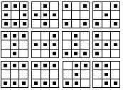
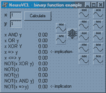
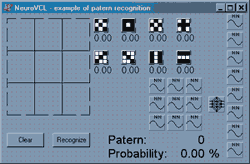

Autor: Velibor Ilić
Abstrakt: U radu se govori o upotrebi neuronskih mreža u objektno orijentisanom programiranju. NeuroVCL komponente za Delphi predstavljaju komplet za razvoj programa na bazi neuronskih mreža sa backpropagation algoritmom. Primeri izrade aplikacije upotrebom ovih komponenata. Neki od primera sadrže i source kod koji se slobodno može preuzeti.
Abstract: In this text the appliance of neural networks at object oriented programming is being discussed. NeuroVCL components for Delphi represent development kit for building programs with backpropagation neural networks. In this text the example of program developing using these components has been given.
Programski jezik: Delphi 5
Operativni sistem: Windows 95, 98, NT
Datum izrade: © Juni, 2000
NeuroVCL Components (Delphi 6)
postavljeno za download 25.11.2001.
Download!!! NeuroVCL V1.0 (NEUROVCLD6.ZIP 69Kb)
https://www.dropbox.com/s/d2becyna22c8il9/NEUROVCLD6.ZIP?dl=0
NeuroVCL Components (Delphi 5)
postavljeno za download 05.12.2000.
Download!!! NeuroVCL V1.0 (NEUROVCL.ZIP 68Kb)
https://www.dropbox.com/s/2l6a7pip3yc5ecc/NEUROVCL.ZIP?dl=0
NeuroVCL Examples
postavljeno za download 25.11.2001.
Download source code (23KB)
https://www.dropbox.com/s/t4vg5lyluoz4z2h/neuro_examples.zip?dl=0
Rad je prezentovan na 5-tom seminaru o neuronskim mrežama (NEUREL)
|
Ilić, V., (2000): “NeuroVCL components for Delphi”, Seminar on Neural Network Applications in Electrical Engineering “NEUREL 2000”, Belgrade, Sponsored by IEEE Signal Processing Society, pp 130-134, IEEE Catalog Number 00EX278, ISBN 0-7803-5512-1 (Softbounded Edition), ISBN 0-7803-5512-X (Microfishe Edition), Library of Congress: 99-60930, http://ieeexplore.ieee.org/xpls/abs_all.jsp?arnumber=902400
|
Uvod
Softverski zahtevi za upotrebu NeuroVCL komponenti
ANN 1.3 - Program za obučavanje neuronskih mreža
Objektne komponente
OBJEKAT TNNSignal
Objekat TNeuralNet
Primer 1 - upotreba NeuroVCL komponenti
Primer 2 - binarne funkcije
Primer 3 - prepoznavanje oblika
Zaključak
Literatura
Teoretski se neuronske mreže mogu obučiti za izračunavanje svake izračunljive funkcije. Međutim u praksi, neuronske mreže najbolje rezultate pokazuju na području klasifikacije, prepoznavanju oblika, prepoznavanju govora, za obradu informacija koji sadrže određenu količinu šuma, funkcije aproksimacije, na problemima koji imaju dosta dostupnih podataka za trening ili na problemima koji zahtevaju brzu primenu odgovarajućeg pravila u zavisnosti od ulaznih podataka.
To je upravo klasa problema koje se algoritamski teško rešava (upotrebom klasičnih programskih jezika). Predstavljanjem neuronske mreže kao objektne komponente se mogu na najbolji način iskoristiti prednosti ova dve različita pristupa.
1. Windows 95/98, NT/2000
2. Borland Delphi 5.0
3. NeuroVCL komponente
4. ANN V2.3 - program za obučavanje neuronskih mreža
Program ANN se bazira na neuronskim mrežama sa backpropagation algoritmom obučavanja. Ovaj program se koristi za obučavanje neuronskih mreža koje se upotrebljavaju u programima napisanim pomoću NeuroVCL komponenti.

Slika 1. - ANN V2.3 - program za obučavanje neuronskih mreža
Pomoću programa ANN neuronska mreža se obučava primerima iz obučavajućeg skupa. Za obučavanje neuronske mreže potrebno odrediti konfiguraciju mreže i trening skup na kome obučavamo neuronsku mrežu.
Za određivanje konfiguracije mreže i trening skupa su potrebni sledeći fajlovi:
| Ekstenzija |
Opis |
| *.INI |
Ovaj fajl opisuje konfiguraciju neuronske mreže: broj slojeva, broj neurona po slojevima, koeficijent učenja, parametre za praćenje obučavanja. |
| *.INP |
ulazi - podaci kojima se neuronska mreža obučava da ih prepoznaje. |
| *.OUT |
izlazi - Podaci koji se očekuju na izlazu neuronska mreža. |
Fajlovi koji nastaju nakon obučavanja neuronske mreže:
| Ekstenzija |
Opis |
| *.NET |
Ovaj fajl nastaje snimanjem svih važnih koeficijenata mreže. U njemu se nalaze stanja težinskih koeficijenata i threshold koeficijenta svih neurona u mreži. |
| *.ERR |
U ovaj fajl se beleže promene minimalne, maksimalne i prosečne greške na kraju svake iteracije. |
| *.LOG |
U ovom fajlu se upoređuje dobijena i očekivana vrednost na izlazu nakon svake XX iteracije za sve podatke iz trening skupa. |
| *.PAR |
U ovaj fajl se snimaju promene težinskih koeficijenata i threshold koeficijenata svih neurona u mreže. |
Nakon uspešnog obučavanja težinski koeficijenti se snimaju na disk (fajl sa ekstenzijom *.NET) a kasnije se učitavaju u neuro komponente koje se koriste u krajnoj aplikaciji.
Program ANN je napisan u programskom jeziku Delphi 5. Razvijan je objektnom metodologijom, u toku razvoja programa su nastali objekti: TArray, TNeuron, TNet. Ovi objekata su upotrebljeni kao osnova za razvoj NeuroVCL komponente za Delphi.
Detaljnije...
Klase predstavljaju osnovu objektno orijentisanog programiranja. Klasa je skup međusobno povezanih polja i metoda (funkcija i procedura) koje se koriste za izvršavanje određenog programskog zadatka. Klasa je skup podataka, a objekti su konkretni primerci klasa.
Programiranje u Delphi-ju se oslanja na VCL klase objektnih komponenti (VCL - Visual Components Class).
Preko objekata tipa TNNSignal se vrši promena ulaznih vrednosti neuronske mreže i očitavaju vrednosti na izlazu mreže nakon obrade.
 Izgled komponente na formi Izgled komponente na formi
Osobine:
| Naziv osobine |
Tip |
Opis |
| Limited |
Boolean |
Ukoliko je ove osobine true program ne dozvoljava prekoračenje vrednosti min/max |
| Max |
Integer |
Maksimalna vrednost signala ako je vrednost ograničena |
| Min |
Integer |
Minimalna vrednost signala ako je vrednost ograničena |
| Name |
String |
Naziv objekta |
| Value |
Real |
Vrednost signala |
Događaji
OnChange - Događaj se izvršava ukoliko se promeni vrednost Value
Metode
Constructor Create - Kreira objekat tipa TNNSignal
Destructor Destroy - Oslobađa memoriju koju zauzima objekat
Objekat tipa TNeuralNet predstavlja neuronsku mrežu. Ovaj objekt vrši obradu ulaznih signala (TNNSignal) i izračunava odgovarajuće vrednosti koje se očitavaju pomoću izlaznih signala (TNNSignal). Podaci iz fajla (*.NET) sa težinskim koeficijentima, generisanim pomoću programa ANN, određuju način funkciju ovog objekta (ponašanje , “algoritam”), informaciju o načinu na koji se izračunavaju izlazni podaci u zavisnosti od ulaza.
 Izgled komponente na formi Izgled komponente na formi
Osobine
| Naziv osobine |
Tip |
Opis |
| Active |
Boolean |
Određuje da li je mreža aktivna ili ne. |
| FileName |
TStrings |
Putanja do fajla (*.NET) koji je nastao nakon obučavanje neuronske mreže programom ANN. U ovom fajlu se nalaze stanja threshold i težinskih koeficijenata svakog od neurona mreže. |
| LayerHidden01 |
Integer |
Broj neurona na prvom skrivenom sloju |
| LayerHidden02 |
Integer |
Broj neurona na drugom skrivenom sloju |
| LayerHidden03 |
Integer |
Broj neurona na trećem skrivenom sloju |
| LayerHidden04 |
Integer |
Broj neurona na četvrtom skrivenom sloju |
| LayerHidden05 |
Integer |
Broj neurona na petom skrivenom sloju |
| LayerHidden06 |
Integer |
Broj neurona na šestom skrivenom sloju |
| LayerHidden07 |
Integer |
Broj neurona na sedmom skrivenom sloju |
| LayerHidden08 |
Integer |
Broj neurona na osmom skrivenom sloju |
| LayerHidden09 |
Integer |
Broj neurona na devetom skrivenom sloju |
| LayerHidden10 |
Integer |
Broj neurona na desetom skrivenom sloju |
| LayerInputs |
Integer |
Broj neurona na ulaznom sloju. |
| LayerOutputs |
Integer |
Broj neurona na izlaznom sloju. |
| Name |
String |
Naziv objekta |
| Ni |
Real |
Koeficijent učenja mreže |
| SignalInputs |
TStrings |
Nazivi ulaznih signala |
| SignalOutputs |
TStrings |
Nazivi izlaznih signala |
Nakon postavljanja potrebnih objekata na formu potrebno je neuronsku mrežu povezati sa ulaznim i izlaznim signalima. Prvo odaberemo ulazne signale na sledeći način: potrebno je kliknuti na osobinu SignalInputs i pojavljuje se sledeći dijalog koji omogućava jednostavno preuzimanje imena objekata koji se nalaze na formi. Na sličan način se biraju i signali na izlazu mreže.
Povezivanjem signala sa neuronskom mrežom automatski se koriguje vrednost parametara InputsLayer i OutputsLayer.
Događaji
Metode
Constructor Create - Kreira objekat tipa TNeuralNet
Destructor Destroy - Oslobađa memoriju koju zauzima objekat
Procedure LoadFromFile(FileName:String) - Učitava iz fajla vrednosti težinskih koeficijenata mreže.
Napomena: Broj slojeva i neurona na svakom sloju neuronske mreže u programu mora odgovarati broju slojeva i neurona mreže koja je obučavana pomoću programa ANN.
Procedure SaveToFile(FileName:String) - Snima vrednosti težinskih koeficijenata mreže.
Procedure Update - Izračunava vrednosti na izlazu mreže u zavisnosti od ulaznih vrednosti
Prvo se pomoću programa ANN kreira trening skup i njime obučava neuronska mreže za rešavanje specifičnog problema. Dobijeni koeficijenti takve mreže se snimaju u fajl koji se kasnije upotrebljava u programu koji kreiramo.
U ovom primeru obučavamo neuronsku mreže da obučava oblike u matrici 12 različitih objekata veličine 3x3 (slika 6.) u matrici veličine 5x5 (slika 5). Trening skup se sastoji od 108 elemenata (broj pozicija x broj oblika) tačnih primera.
Za obučavanje upotrebićemo mrežu sledeće konfiguracije:
Neuronska mreža sa tri sloja sa backpropagation algoritmom obučavanja:
Broj neurona na ulaznom sloju (broj ulaza): 5x5 = 25 (slika 2)
Broj neurona na skrivenom sloju: 20
Broj neurona na izlaznom sloju (broj izlaza): 12
Koeficijent učenja ni: 0.25
Broj primera u trening skupu: 12x9 = 108 (slika 1.1 i slika 1.2)
Trening skup:
ulazi

Slika 1.1. položaji objekata u matrici
Za program ANN je potrebno kreirati 3 teksualna fajla (*.INI, *.INP, *.OUT) kojima se obučava neuronska mreža: Detalje o specifikaciji fajlova pogledati pod [5, 6].
Nakon uspešnog obučavanja neuronske mreže potrebno je snimiti težinske koeficijente u fajl (na primer shapes.net).

Slika 1.2. položaji objekata u matrici
Na ovom primerom ćemo pokazati tok izrade aplikacije za prepoznavanje oblika u matrici 5x5. Na formu je potrebno postaviti 37 objekata tipa TSignal (25 ulaza +12 izlaza). Postavlja 25 objekata TImage koji reaguju kada se mišem klikne na njih i boje ih u crnu ili belu boju. Promenom boje takođe se menja i vrednost ulaznih signala mreže (Algoritam 1.1).
TForm1.Image1Click(Sender: TObject);
begin
If Image1.Canvas.Pixels[12,12]=RGB(0,0,0) then
begin
Image1.Canvas.Brush.Color:=RGB(255,255,255);
In01.Value:=0;
end
else
begin
Image1.Canvas.brush.Color:=RGB(0,0,0);
In01.Value:=1;
end;
Image1.Canvas.Rectangle(5,5,46,53);
end; |
Algoritam 1.1. - Procedura kojom se povezuju reakcija korisnika (klik mišem na sliku) sa ulazima neuronske mreže.
Na forumu postavlja se jedan objekat tipa TNeuralNet. Ovaj objekat je potrebno povezati sa ulaznim i izlaznim signalima.
Dodaju se dva dugmeta (TButton) da bi se lakše upravljalo programom.
Kada se završi dizajniranje korisničkog interfrejsa potrebno je i dodati programski kod.
U proceduru koja izvršava prilikom startovanja programa potrebno je dodati sledeći kod:
Procedure TForm1.FormCreate(Sender: TObject);
begin
NeuralNet1.LoadFromFile(shapes.net');
NeuralNet1.Activate:=true;
end;
|
Algoritam 1.2 - Učitavanje koeficijenata mreže i aktiviranje objekta
Procedura kojom se ispituje koji je simbol nacrtan (algoritam 1.3):
Procedure TForm1.Button1Click(Sender: TObject);
begin
NeuralNet1.Update;//izračunava vrednosti na izlazu mreže
Max:=Out01.Value; //određuje se maximalna vrednost na izlazu
Pos:=1;
If max<Out02.Value then
begin
Max:=Out02.Value;
Pos:=2;
end;
.....
Ponavlja se za svaku od 12 vrednosti
.....
If pos=1 then label1.caption:='1';
If pos=2 then label1.caption:='2';
...
end;
Str(max:4:2,SMax);
Label2.Caption:=SMax;// probability
end; |
Algoritam 1.3 – Određivanje simbola u matrici
Klasičnim programiranjem se na ulaz mreže dovodi matrica koja predstavlja simbol koji želimo da identifikujemo. Upoređivanjem vrednosti na izlazu mreže običnom IF naredbom određuje se koji se znak nalazi u matrici. Kao što vidimo u ovom programu neuronsku mrežu možemo posmatrati kao složenu funkciju (crnu kutiju) sa 25 ulaza i 12 izlaza.
Opis problema
Program demonstrira izračunavanje 10 binarnih funkcija preko neuronske mreže.
Za rešavanje problema upotrebljena je neuronska mreža sa tri sloja sa backpropagation algoritmom obučavanja:
Broj neurona na ulaznom sloju (broj ulaza): 2
Broj neurona na skrivenom sloju: 6
Broj neurona na izlaznom sloju (broj izlaza): 10
Koeficijent učenja ni: 0.25
Broj primera u trening skupu: 10
Trening skup kojim se obučava neuronska mreža sastoji od deset binarnih funkcija, prikazan je na sledećoj tabeli:
| input 1 |
input 2 |
output 1 |
output 2 |
output 3 |
output 4 |
output 5 |
output 6 |
output 7 |
output 8 |
output 9 |
output 10 |
| x |
y |
x and y |
x or y |
x xor y |
x => y |
x <=> y |
not(x) |
not(y) |
not
(x and y) |
not
(x or y) |
not
(x => y) |
| 0 |
0 |
0 |
0 |
0 |
1 |
1 |
1 |
1 |
1 |
1 |
0 |
| 0 |
1 |
0 |
1 |
1 |
1 |
0 |
1 |
0 |
1 |
0 |
0 |
| 1 |
0 |
0 |
1 |
1 |
0 |
0 |
0 |
1 |
1 |
0 |
1 |
| 1 |
1 |
1 |
1 |
0 |
1 |
1 |
0 |
0 |
0 |
0 |
0 |
Kreiranje i obučavanje neuronske mreže
Prvo se kreira fajl BIN.INI pomoću koga se definiše struktura mreže, broj slojeva i neurona na svakom sloju. Zatim se kreiraju se dva fajla u kojima se opisuje trening skup (BIN.INP, BIN.OUT).
Pomoću programa ANN se obučava neuronska mreža da bi smo izračunali težinske koeficijente mreže (BIN.NET).
Slika 2.1 - ANN program za obučavanje neuronskih mreža
Izrada aplikacije u Delphi-ju
Na formu se postavlja se postavlja 12 objekata tipa TNNSignal (2 za ulaze i 10 za izlaze mreže) i 1 objekat tipa TNeuralNet. U objekt inspektoru se podese osobine SignalInputs i SignalOutputs pomoću odgovarajućeg dijaloga povezuju ulazni i izlazni signali sa neuronskom mrežom. Na srednji sloj se postavlja isti broj neurona kao prilikom obučavanja neuronske mreže pomoću programa ANN.

Slika 2.2 - Izgled forme prilikom dizajniranja korisničkog interfrejsa
Kada korisnik klikne na dugme izvršava se sledeća procedura.
procedure TForm1.Button1Click(Sender: TObject);
var s:string;
begin
Input1.Value:=StrToFloat(Edit1.text); // postavlja novu vrednost na prvi ulaz mreže
Input2.Value:=StrToFloat(Edit2.text); // postavlja novu vrednost na drugi izlaz mreže
NeuralNet1.Update; // račnuna vrednosti na izlazu mreže
str(Output1.Value:2:2,s); // read value on first network output and convert to string
Label1.Caption:=s; // prikazuje vrednost na prvom izlazu mreže
str(Output2.Value:2:2,s);
Label2.Caption:=s;
str(Output3.Value:2:2,s);
Label3.Caption:=s;
str(Output4.Value:2:2,s);
Label4.Caption:=s;
str(Output5.Value:2:2,s);
Label5.Caption:=s;
str(Output6.Value:2:2,s);
Label6.Caption:=s;
str(Output7.Value:2:2,s);
Label7.Caption:=s;
str(Output8.Value:2:2,s);
Label8.Caption:=s;
str(Output9.Value:2:2,s);
Label9.Caption:=s;
str(Output10.Value:2:2,s);
Label10.Caption:=s;
end; |
Algoritam 2.1 - Učitavanje koeficijenata mreže i aktiviranje objekta
Sadržaj primera Example 1
/data
// fajlove iskopirati u direktorijum data programa ANN
bin.ini
// informacije strukturi mreže
bin.inp
// trening skup - ulazi
bin.out
// trening skup - izlazi
/source
bin.net
// koeficijenti mreže izračunati pomoću programa ANN
Project1.cfg
Project1.dof
Project1.dpr
Project1.res
Unit1.dcu
Unit1.dfm
Unit1.pas
Opis problema
Ovaj program predstavlja demonstraciju upotrebe NeuroVCL komponenti za prepoznavanje oblika. Neuronska mreža se obučava na primerima da prepoznaje 8 objekata u matrici 3x3.
Za rešavanje problema upotrebljena je neuronska mreža sa tri sloja sa backpropagation algoritmom obučavanja:
Broj neurona na ulaznom sloju (broj ulaza): 9
Broj neurona na skrivenom sloju: 6
Broj neurona na izlaznom sloju (broj izlaza): 8
Koeficijent učenja ni: 0.25
Broj primera u trening skupu: 8
Trening skup kojim se obučava neuronska mreža sastoji od osam oblika prikazanih na slici 2.1.

Slika 3.1 - oblici kojima se obučava neuronska mreža
Neuronske mreže ima osam izlaza (svaki izlaz predstavlja po jedan od oblika). Izlaz neuronske mreže sadrži jednu vrednost 1 a ostale vrednosti su 0. Pozicija jedinice određuje oblik na ulazu mreže.
Kreiranje i obučavanje neuronske mreže
Prvo se kreira fajl PATERNS.INI pomoću koga se definiše struktura mreže, broj slojeva i neurona na svakom sloju. Zatim se kreiraju se dva fajla u kojima se opisuje trening skup (PATERNS.INP, PATERNS.OUT).
Pomoću programa ANN se obučava neuronska mreža da bi smo izračunali težinske koeficijente mreže (PATERNS.NET).
Slika 3.1 - ANN program za obučavanje neuronskih mreža
Izrada aplikacije u Delphi-ju
Na formu se postavlja se postavlja 17 objekata tipa TNNSignal (9 za ulaze i 8 za izlaze mreže) i 1 objekat tipa TNeuralNet. U objekt inspektoru se podese osobine SignalInputs i SignalOutputs pomoću odgovarajućeg dijaloga povezuju ulazni i izlazni signali sa neuronskom
mrežom. Na srednji sloj se postavlja isti broj neurona kao prilikom obučavanja neuronske mreže pomoću programa ANN.

Slika 3.2 - Izgled forme prilikom dizajniranja korisničkog interfrejsa
procedure TForm1.Image1Click(Sender: TObject);
begin
if image1.Canvas.Pixels[12,12]=RGB(0,0,0) then
begin
image1.Canvas.brush.Color:=RGB(255,255,255);
In01.Value:=0;
// <- boja polja bela
end
else
begin
image1.Canvas.brush.Color:=RGB(0,0,0);
In01.Value:=1;
// <- boja polja crna
end;
image1.Canvas.Rectangle(5,5,46,53);
end; |
Algoritam 3.1 - povezivanje reakcije korisnika (klik na sliku) sa neuronskom mrežom
procedure TForm1.Button1Click(Sender: TObject);
var max:real;
pos:integer;
smax:string;
begin
NeuralNet1.Update; // <- određivanje vrednosti na izlazu mreže
max:=Out01.Value;
pos:=1;
if max<Out02.Value then
begin max:=Out02.Value; pos:=2; end;
if max<Out03.Value then
begin max:=Out03.Value; pos:=3; end;
if max<Out04.Value then
begin max:=Out04.Value; pos:=4; end;
if max<Out05.Value then
begin max:=Out05.Value; pos:=5; end;
if max<Out06.Value then
begin max:=Out06.Value; pos:=6; end;
if max<Out07.Value then
begin max:=Out07.Value; pos:=7; end;
if max<Out08.Value then
begin max:=Out08.Value; pos:=8; end;
Case pos of
1:label9.caption:='1';
2:label9.caption:='2';
3:label9.caption:='3';
4:label9.caption:='4';
5:label9.caption:='5';
6:label9.caption:='6';
7:label9.caption:='7';
8:label9.caption:='8';
end;
str(max:4:2,smax);
label10.caption:=smax;
end; |
Algoritam 3.2 - Određivanje vrednosti na izlazu mreže i prikaz rezultata
Sadržaj primera Example 2
/data
// fajlove iskopirati u direktorijum data programa ANN
paterns.ini // informacije strukturi mreže
paterns.inp // trening skup - ulazi
paterns.out // trening skup - izlazi
/source
paterns.net // koeficijenti mreže izračunati pomoću programa ANN
Project1.cfg
Project1.dof
Project1.dpr
Project1.res
Unit1.dcu
Unit1.dfm
Unit1.pas
NeuroVCL komponente u kombinaciji sa programom obučavanje neuronskih mreža (ANN V2.3) nisu ograničene na probleme prepoznavanja znakova nego se mogu upotrebiti za rešavanje niza problema koji se mogu predstaviti u odgovarajućem obliku.
Kao što se vidi iz priloženog primera neuronske mreže i klasične metode rešavanja problema (programski jezici) se međusobno dopunjuju. NeuroVCL komponente se mogu posmatrati kao proširenje mogućnosti programskog jezika Dephi.
Prednost ovakvog povezivanja je da programer koji rešava probleme putem neuronskih mreža ne mora poznavati složene matematičke i logičke funkcije koje povezuju ulazne i izlazne podatke probleme koji rešava, kao što bi morao da zna da taj isti problem rešava klasičnim programiranjem.
Primenom objektno orijentisanog programiranja neuronska mreža je predstavljena kao objekat koji programer jednostavno upotrebljava za rešavanje konkretnog problemima. Pri tome programer ne mora da detaljno poznaje principe na koji način je neuronska mreža iznutra projektovana. Neuronsku mrežu možemo posmatrati kao crnu kutiju (nepoznatu složenu logičku funkciju).
Prednost upotrebe objektnih komponenti u odnosu na drugi softver koji omogućava primenu neuronskih mreža je u tome što programer može napiše samostalnu aplikaciju koja ne zavisi od nekog drugog softverskog paketa (npr MathLab). Takođe, primenom objektnih komponenti programer ima slobodu da sam projektuje korisnički interfejs za razliku od specijalizovanih aplikacija.
Pomoću program ANN i objekata koji su prethodili razvoju NeuroVCL komponenti napisan je program za prepoznavanje ćiriličnih slova OCR V1.0 [5, 6].
Zamolio bih posetioce moje Web-stranice koji su preuzeli NeuroVCL komponente da mi pošalju komentare, sugestije i kritike o mogućem poboljšanju komponenti u narednim verzijama. Takođe bih zamolio korisnike da mi na adresu ilicv@EUnet.rs
pošaljete interesantne primere koje ste kreirali upotrebom NeuroVCL komponenti.
[1] “Frequently asked questions about AI”, http://www.cs.cmu.edu/Web/Groups/AI/html/faqs/ai/ai_general/top.html
[2] “Neural Network Frequently asked questions”, ftp://ftp.sas.com/pub/neural/FAQ.html
[3] Hotomski, P., (1995): “Sistemi Veštačke inteligencije”, Tehnički fakultet “Mihajlo Pupin”, Zrenjanin
[4] Ilić, V., (1999) “ANN - Program za obučavanje neuronskih mreža sa backpropagation algoritmom učenja”,
http://SOLAIR.EUnet.rs/~ilicv/ANN.html
[5] Ilić, V., (1999) “Obučavanje neuronskih mreža za prepoznavanje ćiriličnih slova”, magistarski rad, Tehnički Fakultet “Mihajlo Pupin”, Zrenjanin
[6] Ilić, V., (1999) “OCR - Program za prepoznavanje ćiriličnih slova”, http://SOLAIR.EUnet.rs/~ilicv/ocr.html
[7] Jocković, M., Ognjanović Z., Stankovski S. (1997) “Veštačka inteligencija inteligentne mašine i sistemi”, Grafomed, Beograd
[8] Milenković, S., (1997): “Veštačke neuronske mreže”, Zadužbina Andrejević, Beograd
[9] Reisdorph, K., (1999): “Naučite Delphi 4 za 21dan”, Kompjuter biblioteka, Čačak
[10] Sajić, I., (1995): “Neuronske mreže”, časopis “Računari” br 108, BIGZ, Beograd
[11] Savić, D., (1992), “Uvod u objektno programiranje”, PC Program, Beograd
[12] Subašić, P., (1998): “Fazi logika i neuronske mreže”, Tehnička Knjiga, Beograd
|